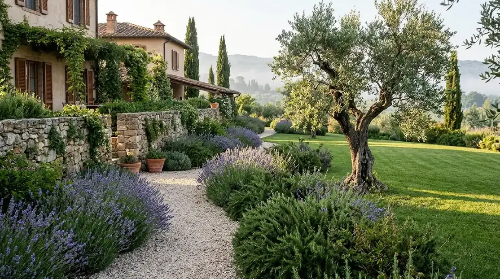
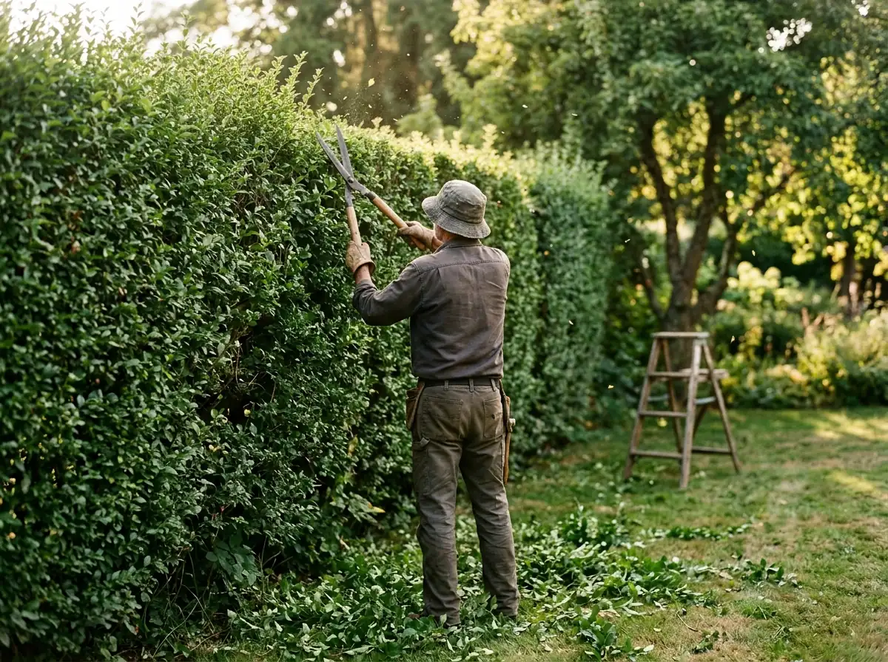
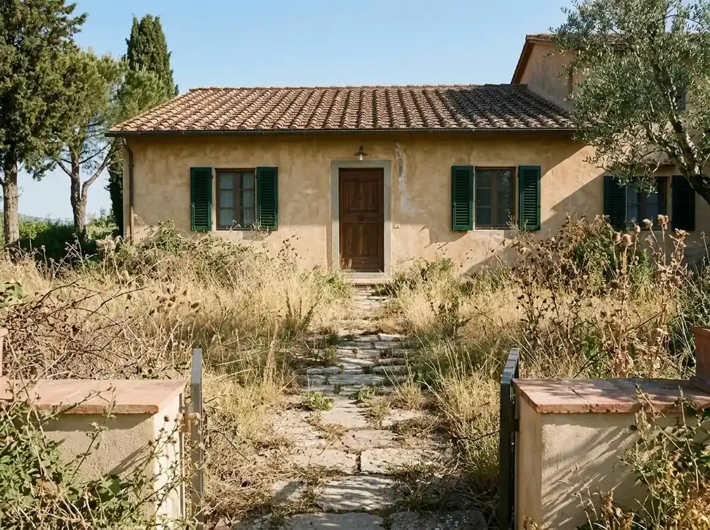
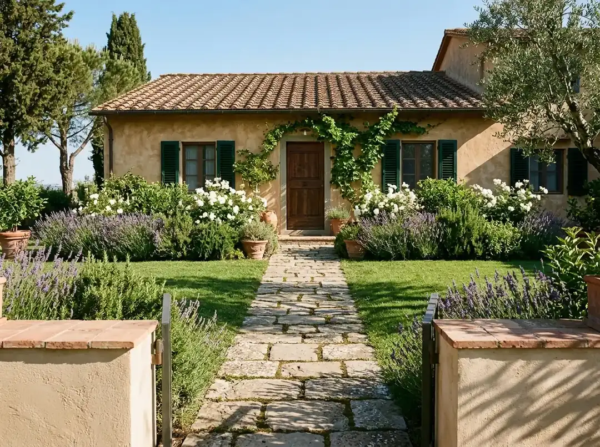

Giardinieri · Firenze sud e Chianti
Il tuo giardino curato tutto l'anno, dallo stesso giardiniere.
Taglio del prato, siepi, potature, irrigazione. Passiamo sempre lo stesso giorno con la stessa squadra, e dopo ogni visita ti mandiamo due foto.
Un giardino, quattro stagioni
Ogni stagione ha i suoi lavori. Scegli quella che ti interessa.
- Taglio ogni settimana, un po' più alto per non bruciare il prato
- Irrigazione all'alba, regolata sulla pioggia
- Siepi in forma prima di luglio
- Controllo di parassiti su agrumi e rose

Come lavoriamo
Scorri: il prato cresce un passo alla volta.
- Giro del giardino
Passiamo insieme a vedere prato, piante, irrigazione e cosa ti piacerebbe cambiare.
- Piano dell'anno
Ti lasciamo per scritto cosa facciamo in ogni stagione e quante volte passiamo.
- Passaggi fissi
Stesso giorno, stessa squadra. Se piove, ti avvisiamo e recuperiamo entro la settimana.
- Foto dopo ogni visita
Due foto e una riga su cosa abbiamo fatto, anche se sei via.
Prima e dopo
Trascina la linea. Ingresso di una casa di campagna lasciato a sé stesso per due estati: prato nuovo, bordure di lavanda e rosmarino, vialetto in pietra rimesso in quota. Lavoro di esempio, foto generate con l'IA.


DopoPrimaChi siamo
Siamo due giardinieri fissi e un aiuto nei mesi di punta. [Nome del titolare] ha studiato agraria a Firenze e ha cominciato dagli uliveti di famiglia a Impruneta; molti dei giardini che seguiamo oggi sono di vicini che li avevano visti.
Dove passiamo
- Impruneta
- Greve in Chianti
- Bagno a Ripoli
- San Casciano in Val di Pesa
- Tavarnelle
- Firenze sud
Spazio per i documenti veri: attestato di manutentore del verde, patentino per i prodotti fitosanitari, assicurazione per i lavori in altezza sugli alberi.
Domande
Portate via il verde tagliato?
Sì, sempre. Rami e foglie vanno al centro di compostaggio. Se hai una compostiera, lasciamo lì l'erba del prato.
Ogni quanto passate?
D'estate di solito ogni settimana o ogni quindici giorni, d'inverno una volta al mese. Il piano lo decidiamo insieme al primo giro.
Usate prodotti chimici?
Il meno possibile. Prima proviamo con potature, concimi organici e trappole; se serve un trattamento, ti diciamo quale e perché.
Potate anche gli ulivi?
Sì, tra fine inverno e inizio primavera. Per alberi molto alti lavoriamo con la piattaforma.
Prenota un giro del giardino
Il primo giro serve a conoscerci e a capire cosa ti serve. Poi ti mandiamo il piano dell'anno.
- Telefono
- Numero di esempio
- Indirizzo di esempio
- Sede
- Via di esempio, Impruneta (FI)